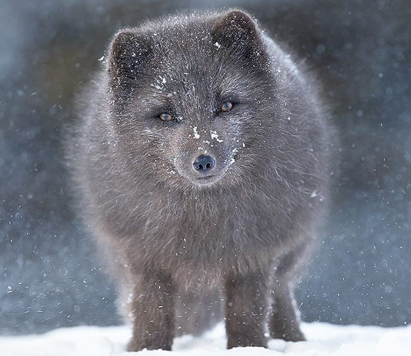

Мир природы – это великолепная палитра красок, характеров, способно стей, повадок и естественной красоты невообразимого количества животных. За последние полвека количество диких животных на планете сократилось почти на 70 %. В обновленной Красной книге России оказались почти 450 видов, подвидов и популяций, в том числе более 40 новых. Некоторые из них получили статус «находящихся под критической угрозой исчезновения»
Манул
Манул или Палласова кошка — самая дикая и даже опасная кошка в дикой природе. Хотя на вид она небольшая и весьма милая, однако эта дикая кошка является хищником. Который не очень то будет рад встрече с человеком.
Место обитания
Кошка обитает в районах Алтая, Тувы, Бурятии и Забайкалья - в основном, в районах, изобилующих степями, которые являются для этой дикой кошки идеальными укрытиями. Манулы прекрасно приспособлены к жизни в холоде и снеге, у них самая густая шерсть среди всех кошек в мире, что позволяет им выдерживать метели и снежные бури.
Причины исчезновения
Это происходит по нескольким причинам, например, очень часто браконьеры расставляют ловушки и капканы в запрещенных местах, угрозу жизни могут предоставлять и собаки охотников или пастухов. Если в районах его обитания зима достаточно суровая или снежная, то по этой причине может сокращаться число грызунов, которые являются основной пищей манулов. В настоящее время охота запрещена во всех странах обитания данного вида, за ними ведется усиленный контроль.
Нарвал
Животное вида кита с длинным бивнем — этакий морской единорог, единственный в своем роде. Нарвал это уникальное животное. Он использует свой рог, чтобы пробить лед и выбраться на поверхность. Они могут погружаться на километровую глубину. Рог также они используют в качестве защиты, хотя сами являются весьма спокойными существами.
Место обитания
Основные места обитания нарвала: Канадский архипелаг и берега Гренландии, воды Шпицбергена, Земля Франца-Иосифа и воды вокруг северной оконечности Северного острова Новой Земли.
Причины исчезновения
Список проблем нарвала не заканчивается браконьерством — ему также приходится бороться с загрязнением мировых вод. Были попытки разведения их в неволе, но чуткое животное не может должным образом адаптироваться к искусственной среде обитания.
Командорский голубой лис

Медновский песец или командорский песец -это подвид песца
Место обитания
Обитают только на острове Медный, входящем в состав Командорских островов в Баренцевом море.
Причины исчезновения
В 1970-е годы резко сократилось количество детенышей лис, многие из которых заболели ушной чесоткой. Весь вид оказался под угрозой исчезновения. Сегодня количество редких голубых песцов в Командорском заповеднике на Камчатке, значительно увеличилось за два года на 49%. Службы заповедника сообщают, что количество особей достигло 500 экземпляров.